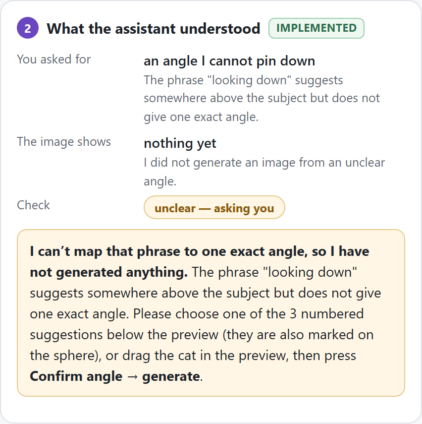
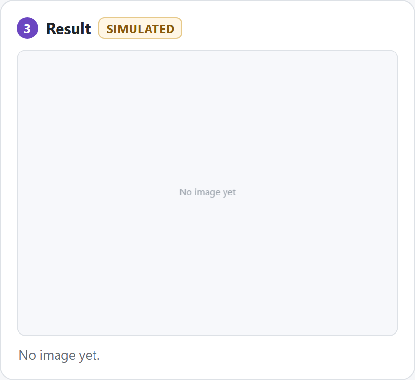
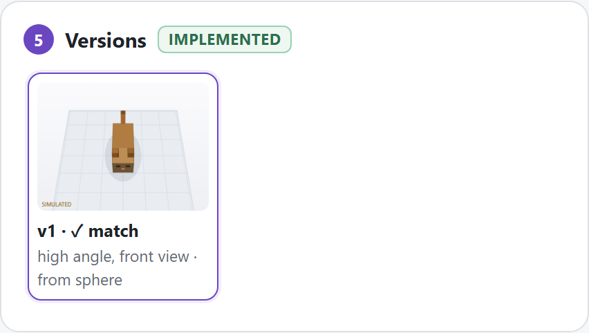

1
Write the prompt
Person does
Types “Make it look like you’re looking down at the cat from the stage”.
System does
Scans for viewpoint words implemented.
Person sees
Prompt text entered; no image generated yet.

2
The assistant clarifies
Person does
Reads the clarification feedback.
System does
Flags metaphor: generates nothing; presents 3 numbered angles implemented.
Person sees
“I have not generated anything”, explanation, and numbered options.

Understood request & 3 suggestions

Generation withheld until confirmed
3
Point at the angle
Person does
Picks Suggestion 1 via the numbered button below preview.
System does
Moves camera to θ 0°, φ 55°; updates preview & readout implemented.
Person sees
Selected angle on sphere, “high angle, front view”, and Confirm.

4
Confirm & keep version
Person does
Presses “Confirm angle → generate”.
System does
Calls generator simulated; records result as Version 1 implemented.
Person sees
Generated image at requested angle with “matches request” badge.

Simulated image (θ 0°, φ 55°, matches request)

Saved version history (Version 1 recorded)